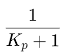
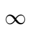
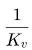
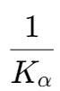
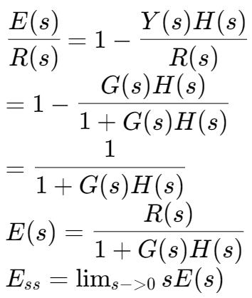
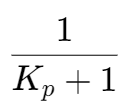
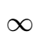
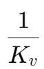
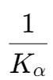

控制系统类型和稳态误差
对于不同的系统类型和不同的输入类型，在反馈为 1,, 时，对应的稳态误差：
| Step | Ramp | Acceleration | |
|---|---|---|---|
| Type 0 |  |  | |
| Type 1 | 0 |  | |
| Type 2 | 0 | 0 |  |
稳态误差 Ess 计算方法
设系统的输入为 R(s)，输出为 Y(s)，增益 G(s)，反馈 H(s)
则误差为：E(s) = R(s) - Y(s)H(s)

对于不同的系统类型和不同的输入类型，在反馈为 1,, 时，对应的稳态误差：
| Step | Ramp | Acceleration | |
|---|---|---|---|
| Type 0 |  |  | |
| Type 1 | 0 |  | |
| Type 2 | 0 | 0 |  |
设系统的输入为 R(s)，输出为 Y(s)，增益 G(s)，反馈 H(s)
则误差为：E(s) = R(s) - Y(s)H(s)